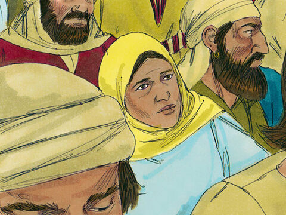
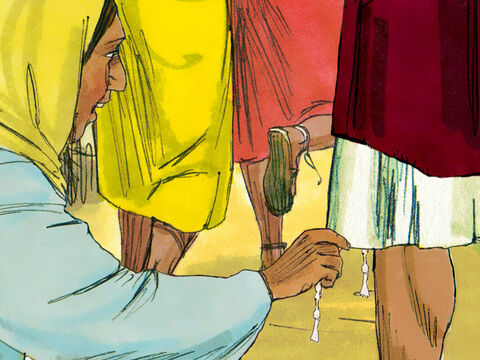

Lord Jesus Heals A Woman With An Issue Of Blood
And, behold, a woman, which was diseased with an issue of blood twelve years,
came behind him, and touched the hem of his garment:
For she said within herself, If I may but touch his garment, I shall be whole.
But Jesus turned him about, and when he saw her, he said, Daughter, be of good comfort;
thy faith hath made thee whole. And the woman was made whole from that hour.
Matthew 9:20-22
- 
- 